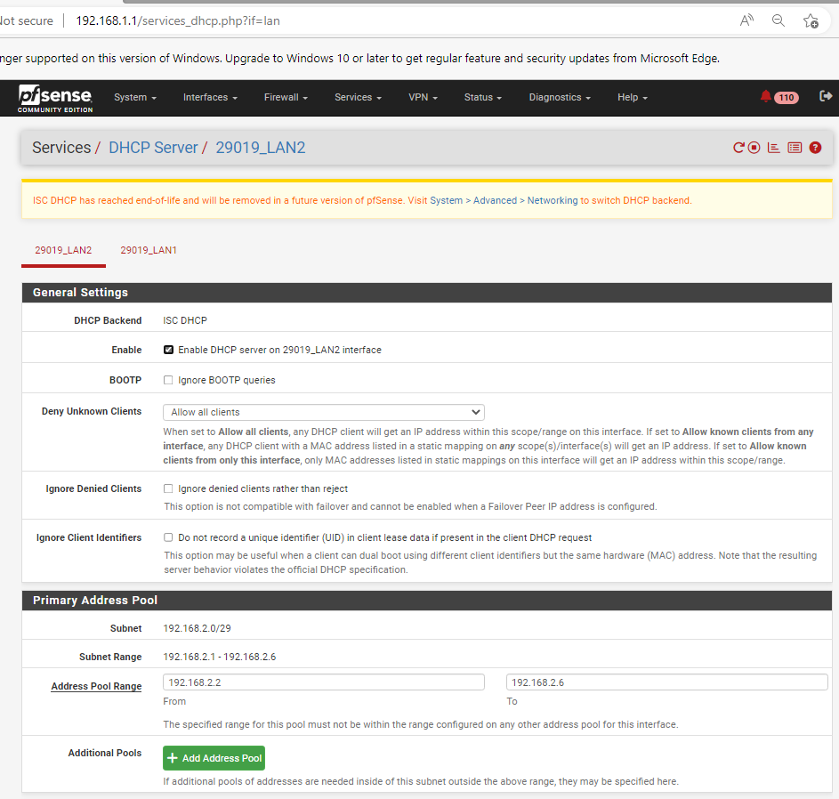
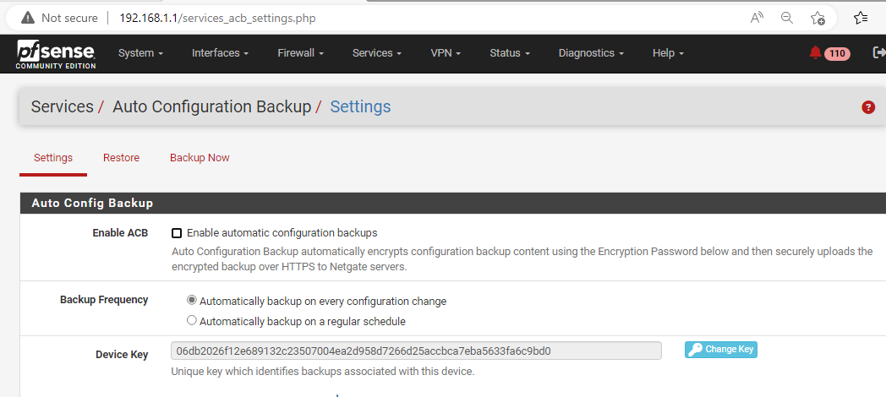
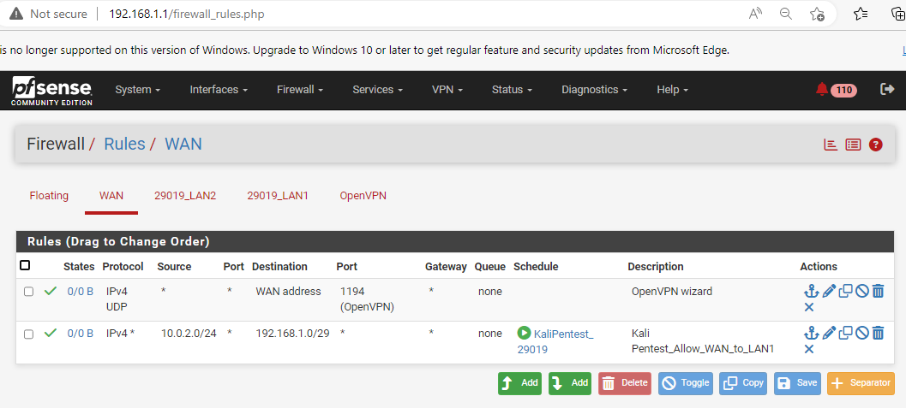
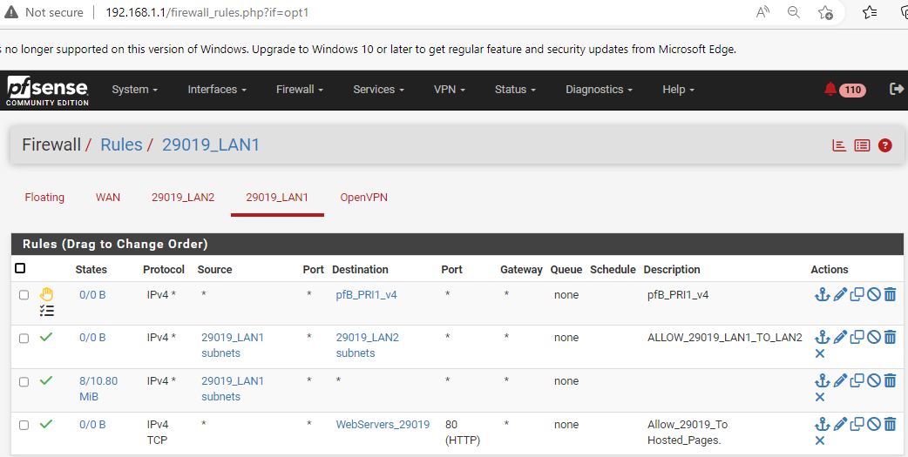
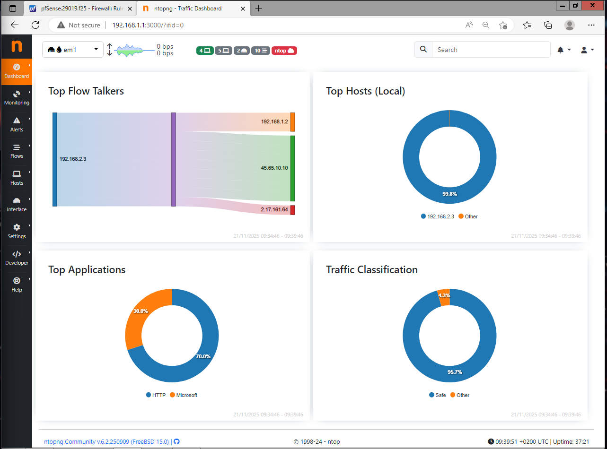

Navigation
pfSense Firewall Configuration
This page documents the setup and configuration of the pfSense firewall, covering interfaces, DHCP, firewall rules, and network monitoring as required by Tasks 1, 8, and 9.
1. Interface and Initial Setup
Interface Assignments
This evidence shows the assignment of interfaces: WAN (Public/NAT), LAN1 (192.168.1.1/29), and LAN2 (192.168.2.1/29). Each segment is correctly isolated.

DHCP Configuration
pfSense is configured to provide DHCP service *only* to the LAN2 segment, fulfilling the requirement for split DHCP responsibility (Linux Server handles LAN1).
Captive Portal Status
The pfSense captive portal feature was explicitly removed/disabled as required for the network topology.
2. Firewall Rules and Scheduling
Custom Schedule Evidence
The custom schedules for `KaliPentest_StudentID` and `LAN2_NoSocial_StudentID` define the exact time windows for enforcing access policies.

WAN Rules (Kali Access)
The WAN rules, including the schedule-enforced `KaliPentest_StudentID` rule, permit external Kali traffic into the internal networks only during the defined one-hour window.
LAN1 Rules (Inter-LAN and Web Access)
LAN1 rules include `ALLOW_StudentID_LAN1_TO_LAN2` for bi-directional access and general rules allowing access to hosted web pages (IIS and Documentation Server).
LAN2 Rules (Scheduled Block)
The scheduled `LAN2_NoSocial_StudentID` rule is shown enforcing the social media block policy during the mandated office hours.

OpenVPN Rules
The essential firewall rule on the OpenVPN interface allowing connected VPN clients (IT OU members) to successfully access the LAN1 segment and domain resources.

3. Network Monitoring (NTOPng)
LAN1 NTOPng Dashboard
NTOPng dashboard view of the LAN1 traffic, showing centralized monitoring for IT operations and demonstrating the ability to detect traffic anomalies.

LAN2 NTOPng Dashboard
NTOPng dashboard view of the LAN2 traffic, which is monitored separately for analysis and resource usage tracking.
